Bulk Vessel Feeder Operating Principles
Purpose
This document details the operating principles for the bulk vessel feeder module.
Module Function
To provide a continuous supply of correctly oriented vessels from the bulk vessel feeder hopper to the supply carriage.
Terminology
- Vessels in the DxI are named according to their use, therefore vessels in the bulk vessel feeder are termed vessels, instead of RVs.
- Using the term RVs specifies that a vessel is used for a reaction, but not all vessels in the DxI are used for reactions.
- Refer to the Carriage Module Operating Principles for explanations of vessel types and uses.
Location
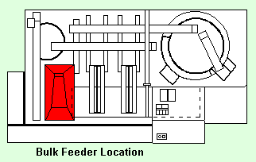
Operational Overview
- When vessels are needed (dispense chute is not full), the elevator actuates.
- As the elevator moves, the elevator scoops lift the vessels out of the hopper.
Note: Not all scoops contain vessels. The module works on a principle of averages. Engineering predetermined the vessel yield and the yield is adequate for supplying vessels for any type of testing.
- Vessels that are not seated correctly in the elevator scoops, fall out of the scoops and into the hopper as the scoops proceed upward.
- Vessels that are positioned correctly, proceed to the upper end of the elevator.
- Vessels that remain in the elevator scoops can be positioned in one of two ways, bottom left or bottom right. When the scoops (with or without vessels) are positioned in front of the lower or upper ejector cylinders, the ejector cylinders operate in the manner shown in the table.
If Then No vessel is present The ejector cylinders actuate normally, but no vessels are placed into the orienters. Vessel top faces left - The lower ejector actuates normally, but does not push the vessel out of the scoop. The pusher hits the vessel in such a way that the vessel stops the pusher.
- The two sensors on the pusher indicate to software that the vessel is oriented with the top facing left.
- The pusher is retracted.
- The elevator moves forward (upward) one scoop.
- The upper cylinder actuates normally, and ejects the vessel from the scoop into the rear orienter according to these steps:
- The upper ejector pushes the open end of the vessel out of the scoop.
- The vessel hits a curved surface and is directed downward.
- The vessel falls into the dispense chute with the open end of the vessel upward.
Note: Only vessels with the open end facing the pusher arrive at the upper ejector.Vessel bottom faces left The lower ejector actuates normally and ejects the vessel from the scoop into the front orienter: - The vessel bottom end is pushed out of the scoop by the lower ejector.
- The vessel moves into the front orienter, with the vessel ring sliding along a pair of rails.
- When the vessel ring moves to the end of the rails, both ends of the vessel drop.
- The top of the vessel lands on a flat surface and the bottom swings downward, orienting the vessel correctly.
- The vessel falls into the dispense chute with the open end of the vessel upward.
- The dispense chute continues to receive vessels until it is full (detected by the dispense chute status sensor). A small pivot arm protruding into the dispense chute actuates the dispense chute status sensor. The arm moves into the sensor beam when a vessel displaces it and signals the elevator to stop.
- The dispenser opens and closes, dispensing a single vessel whenever a carriage is presented.
Component Locations

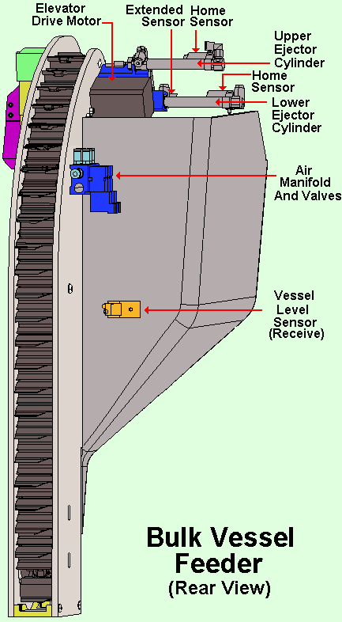
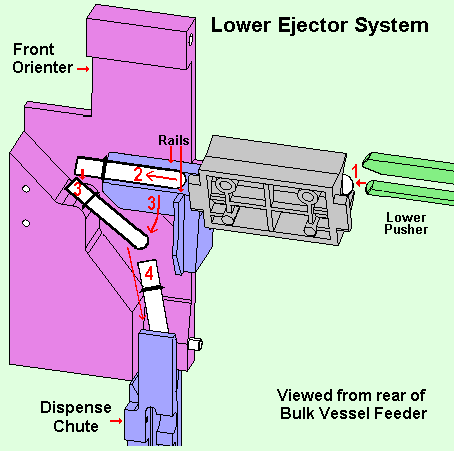
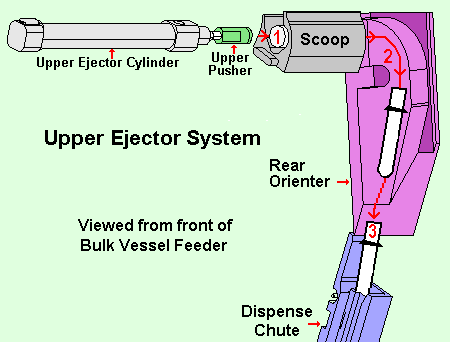
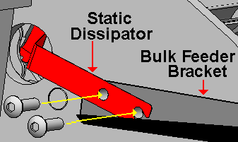
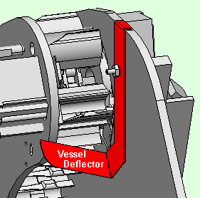
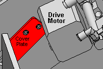
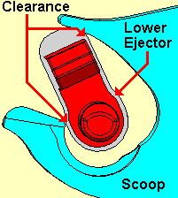
Component Functions
| Component | Description and Function |
|---|---|
| Bracket, Upper Support | Stabilizes the top of the bulk feeder module. To remove the module, this bracket must be unbolted from the instrument chassis. The screw holes in the bracket are slotted so the module can be secured with the module base seated on the base plate. |
| Chain, Drive | Driven mechanically, it moves the scoops that are attached to the drive chain. |
| Chute, Dispense | Vertical storage area along the side of the module that can store up to nine vessels with the open ends of the vessels upward. If only one vessel is in the dispense chute, the system does not release it until another vessel is dropped on top of it. The upper vessel is necessary to dispense a vessel correctly.
Note: The dispense chute is referred to as the "Escrow Channel" in the system software.
|
| Cover, Orienter | Uppermost part of the orienter. The orienter cover keeps vessels from escaping the orienters. This part is required for proper operation of the bulk feeder. |
| Cover Plate, Hole | Covers a hole in the left side plate, near the chain drive motor, and prevents vessels from falling into the drive chain area accidentally. |
| Cylinder, Ejector | Air-operated device that moves vessels from the elevator scoops into the orienter.
Specific air pressure and fixed orifices that control the flow of the air to the cylinders, control the speed of the cylinders. |
| Dispenser Block | Allows one vessel at a time to drop into a carriage. The dispenser block is a Delrin block with opposing key slots that attaches to the end of the dispenser cylinder and controls the release of vessels.
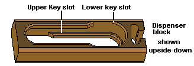 Note: For dispense block operation, refer to the section near the end of this document.
|
| Dispenser Cylinder | Moves the dispenser block that places one vessel at a time into the supply carriage.
Note: The dispense chute is never allowed to empty because there must be a nesting vessel above the one being dispensed to help control the orientation of the vessel being dispensed.
Note: The dispense cylinder is referred to as the escapement valve in the system software.
|
| Elevator | Consists of a loop of attachment link chain 48 inches long that is driven at the top by a stepper motor. Other information regarding the elevator:
|
| Hopper | Holds bulk vessels and funnels the vessels toward the elevator. The hopper maximizes the number of vessels that enter the scoops correctly. |
| Interface PCB | Contains the input and output connections for the bulk vessel feeder module to the instrument. |
| Manifold, Air | Located on the left side of the module. The manifold contains three sections:
Electrical power is applied to the manifold valves. Actuating an air valve causes the corresponding air cylinder to extend. When power is removed from the manifold valves, the air cylinders retract. Each valve has a built-in LED that, when lit, indicates that power has been applied to it. |
| Motor, Chain Drive | Drives the elevator. The drive motor is located near the top of the module, to the left of the drive sprocket, and is mounted to the left side plate. |
| Orienters and Pushers | Positioned atop the dispense chute, it accepts vessels in both orientations (open-end left or open-end right), and then correctly orients the vessels before the vessels enter the dispense chute.
|
| Sensors | Seven sensors are located on the module:
|
| Scoops | The scoops are attached to the elevator chain. The scoops pick up vessels from the hopper.
|
| Side Plate | The large flat surfaces of the bulk feeder to which parts and components are attached. |
| Sprocket, Drive | The sprocket that is attached to the chain drive motor that rotates the chain. Refer to the elevator position sensor for sprocket details. |
| Static Dissipater | Removes static from the metal chain attached to the scoops. To remove charge from the chain, this spring-metal device must always contact the chain. |
| Vessel Deflector | Ensures that vessels are seated correctly in the scoops, when the vessels arrive at the eject locations, either by:
|
Dispenser Block Operation
The dispenser block is the key device in the dispenser assembly. The dispenser block limits vessel entry into the supply carriage and performs the delivery function using the steps shown here.
| Step | Action | Graphic |
|---|---|---|
| 1 | The air cylinder is in the retracted position at the start of each cycle. The vessel cannot fall through the block because its ring rests on the lower "key slot" side walls. | 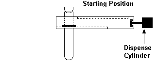 |
| 2 | The dispense block moves when the air cylinder is actuated. The vessel drops through the wider opening in the "key slot" and is dispensed into the waiting supply carriage. | 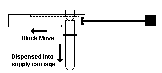 |
| 3 | The next vessel in the dispense chute stops on top of the block on the upper "key slot" sides. | 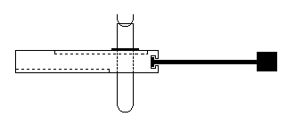 |
| 4 | The cylinder returns to its original position and the vessel drops through the upper wider "key slot" opening and rest on the lower "key slot" sides, ready for the next dispense. | 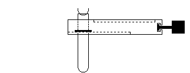 |
Interacting Devices
The bulk vessel feeder interacts with the supply carriage.
- sends the supply carriage to a location under the bulk vessel feeder, when a vessel is required.
- operates the bulk vessel feeder dispenser causing a vessel to be loaded into the supply carriage.